Plate 00 — Atlas Cover
The origin sphere: pure potential before division, motion, or symmetry.
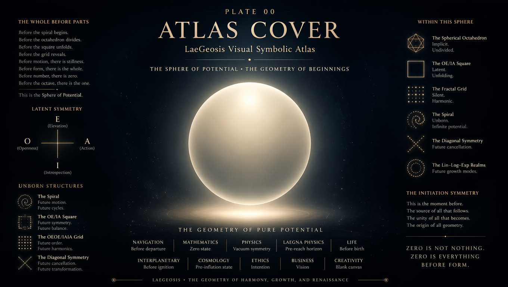
Plate 01 — Spiral of Origin
The first projection: spherical octahedron memory expressed as a spiral.
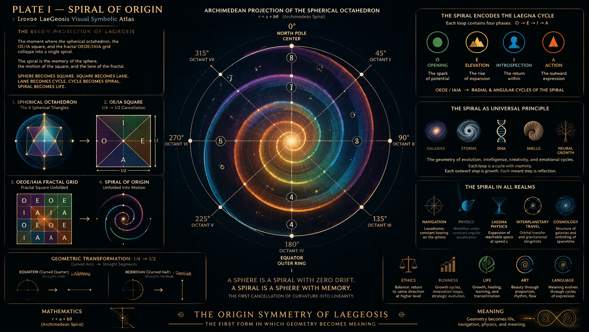
Plate 02 — Archimedean Lane
The spiral becomes motion: the lane geometry of direction and continuity.
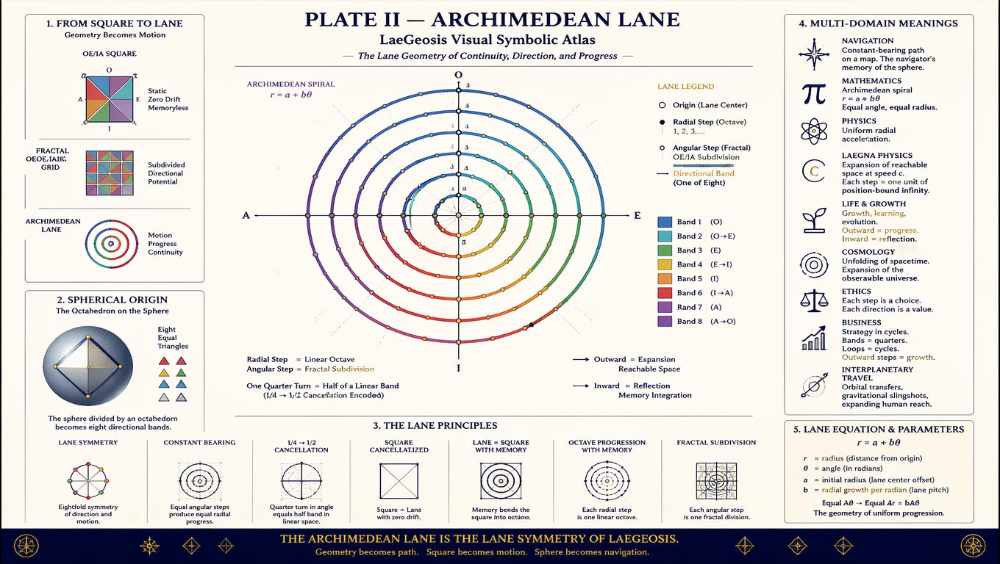
Plate 03 — Cycle Grid
The OE/IA square unfolds into harmonic cycles and temporal structure.
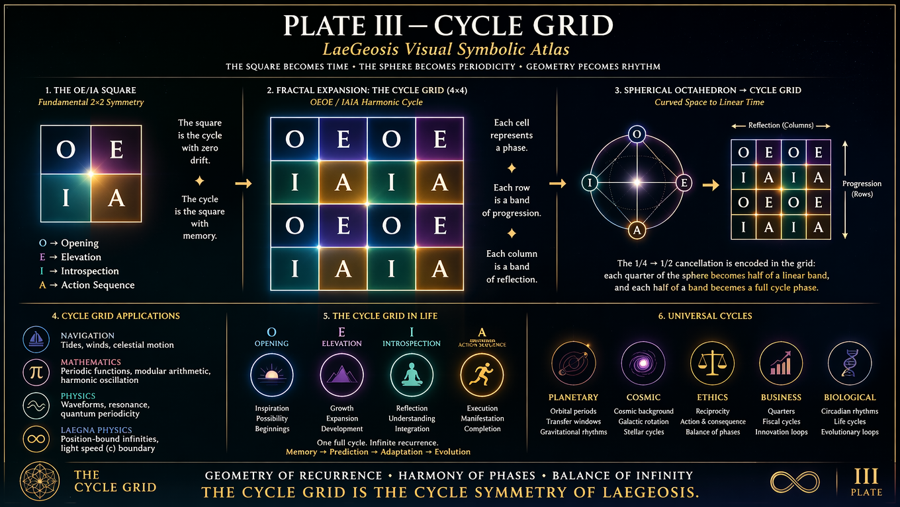
Plate 04 — Spherical Octahedron
The sphere’s perfect symmetry: eight equal regions, harmonic structure.
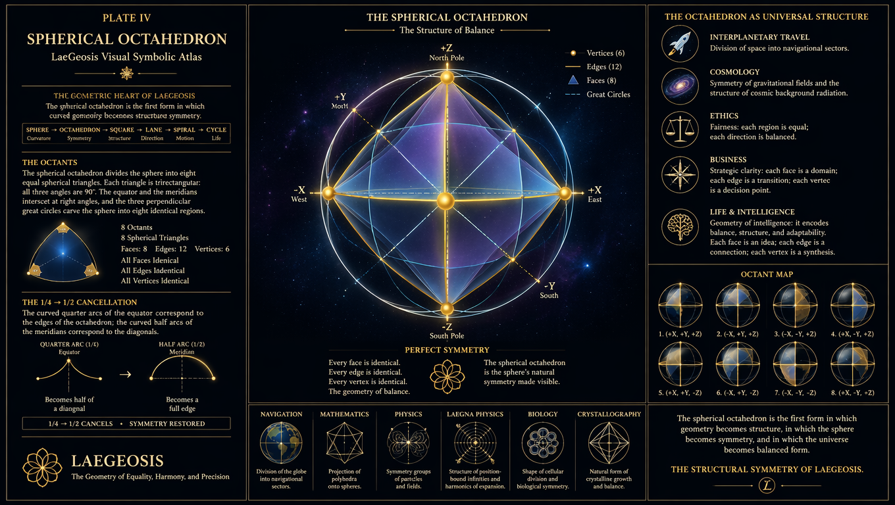
Plate 05 — Diagonal Symmetry
The cancellation geometry: 1/4 → 1/2 transformation, linear equivalence.
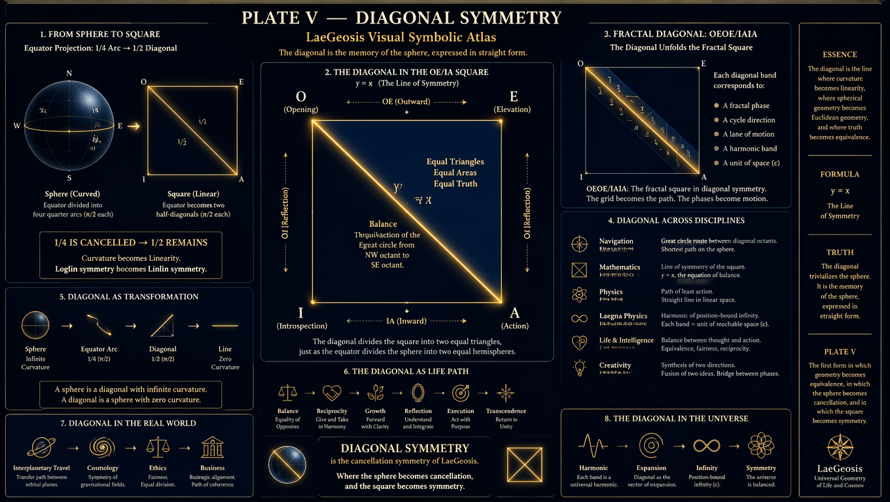
Plate 06 — Lin–Log–Exp Realms
Three growth modes unified: linear, logarithmic, exponential.
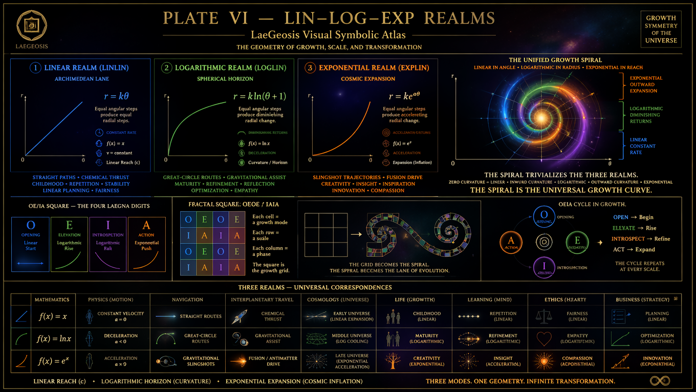
Plate 07 — Social Equilibrium
Human symmetry: OE/IA as cultural, ethical, and cooperative geometry.
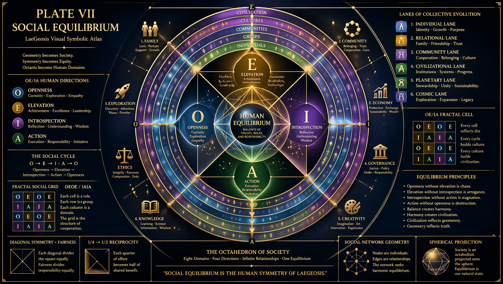
Plate 08 — Interplanetary Spiral
Orbital mechanics, gravitational corridors, cosmic navigation.
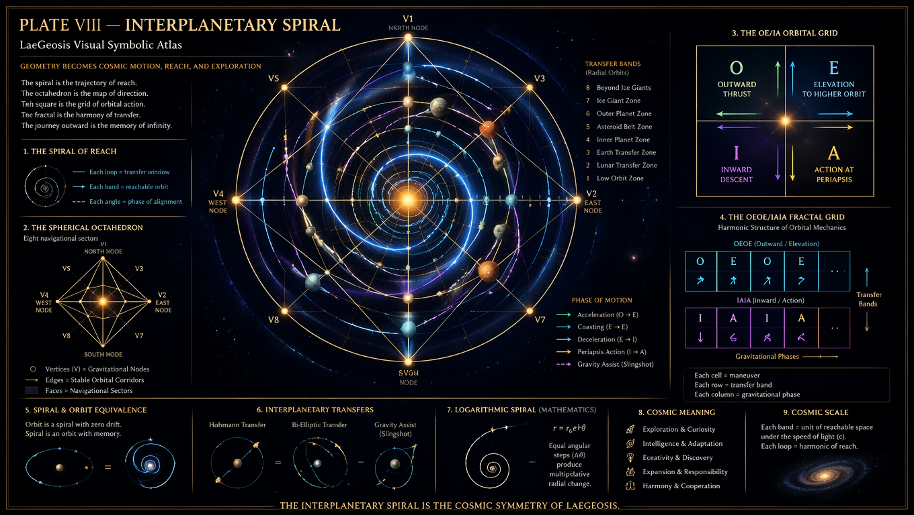
Plate 09 — Earth Projection
The biosphere as geometric equilibrium: climates, ecosystems, civilizations.
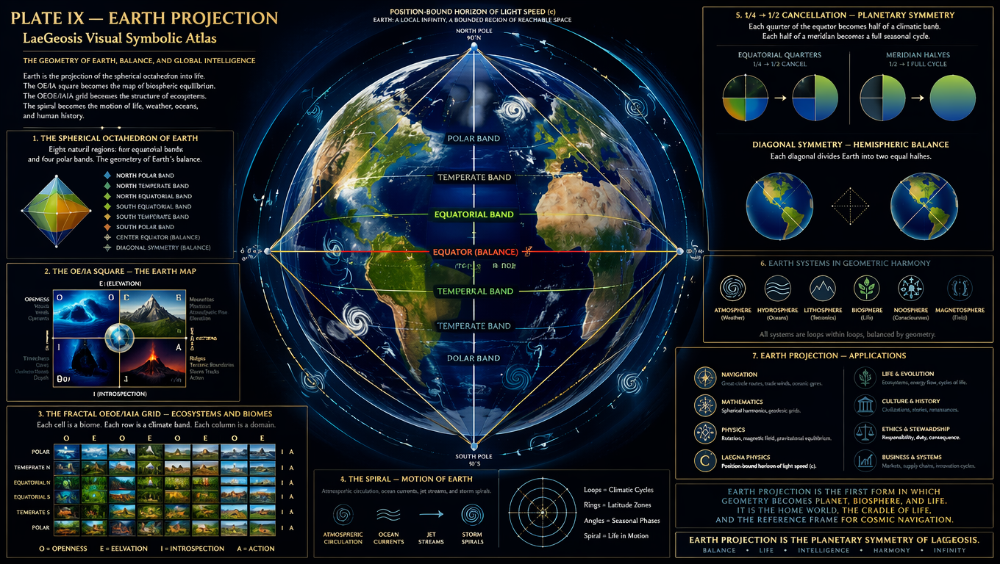
Plate 10 — Universe Precision
Cosmic symmetry: galaxies, spacetime, position‑bound infinities.
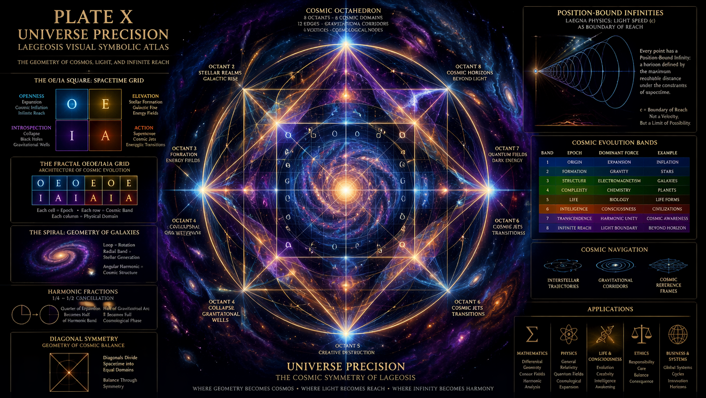
Plate 11 — Life Spiral
Evolution, biology, cognition: life as geometric continuity.
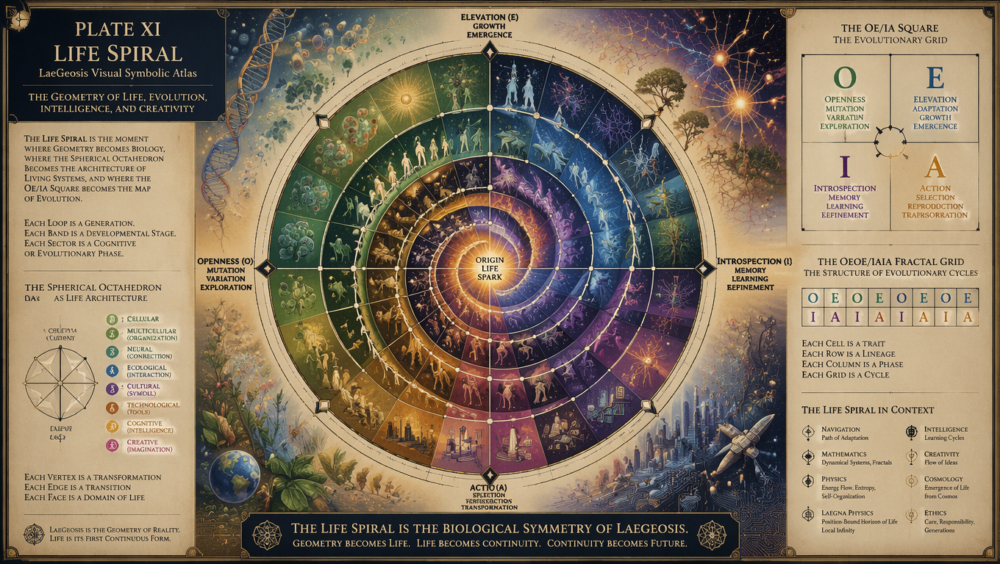
Plate 12 — Intelligence & Creativity
Mind geometry: insight, imagination, cognitive harmonics.
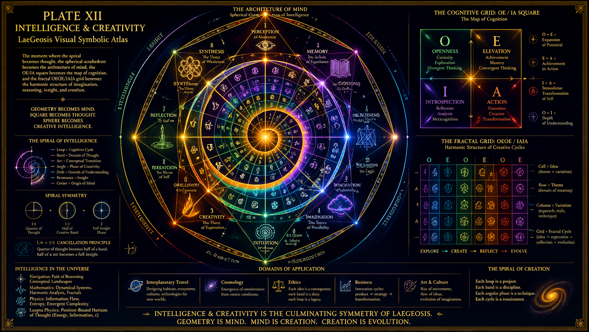
Plate 13 — Next Octave
Transcendence: the atlas expands into the next sphere, next harmonic.
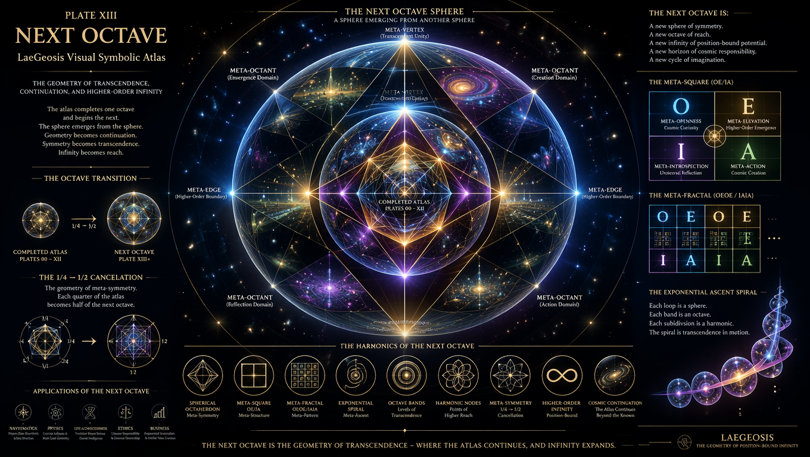